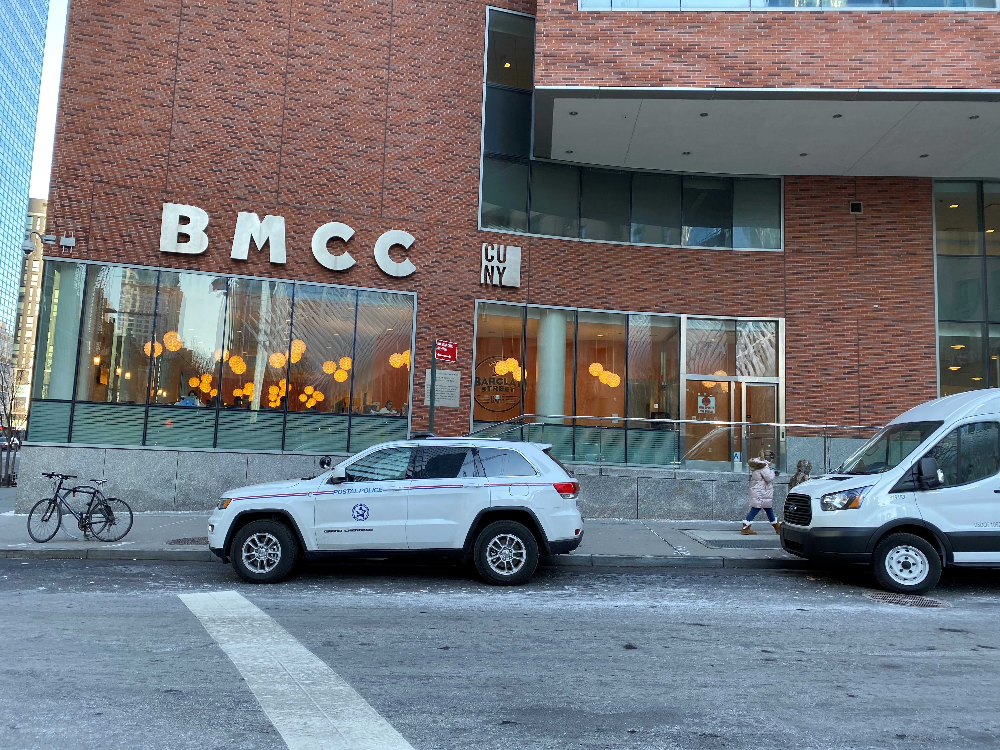

CUNY Life

Start study at CUNY is been the most difficult challenge that I have never face before in my life because after 14 years without study at all my brain is not the same, becomes lazy. CUNY is another kind of challenge because I stopped running to focus on my studies (it was the most difficult decision to take), but also the most exciting decision because I will learn new things like Programing or Making web sites. Doing works like web development make me realized that this could be nice to study long time ago, it is hard work but at the end when you see your final work at the browser I feel satisfied.